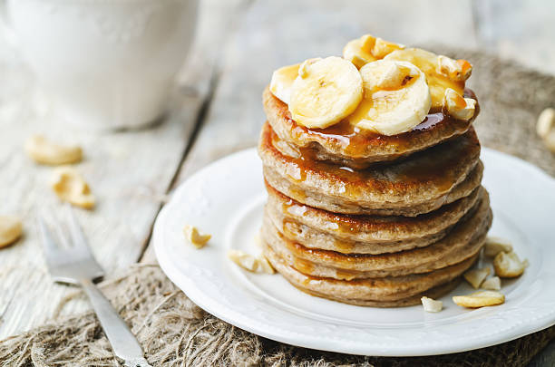

Recipe for pancakes

Discription
Fluffy banana pancakes made from scratch with mashed ripe
bananas that are ready in minutes for a delicious twist on
ordinary pancakes.
Ingredients
- 1 cup of all-purpose flour
- 1 tablespoon of white sugar
- 2 teaspoons of baking powder
- 1/4 teaspoon of salt
- 1 egg, beaten
- 1 cup of milk
- 2 tablespoons of vegetable oil
- 2 ripe bananas, mashed
Steps:
- Gather all ingredients
-
Combine flour, white sugar, baking powder, and salt in a
bowl. Mix together eggs, milk, vegetable oil, and
bananas in a second bowl. Stir flour mixture into banana
mixture; batter will be slightly lumpy.
- Heat a lightly oiled griddle or frying pan over medium
high heat. Pour or scoop the batter onto the griddle, using
approximately 1/4 cup for each pancake.
-
Cook until pancakes are golden brown, 3 to 5 minutes per side.
Serve hot.
- Serve hot and enjoy
Back Home